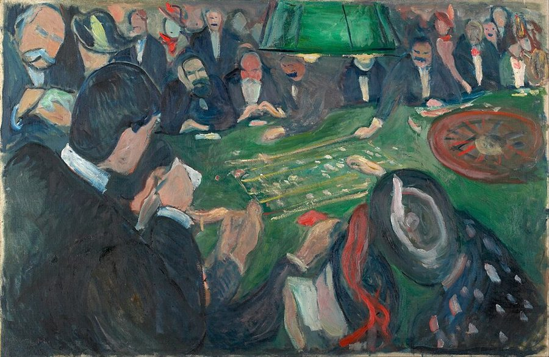
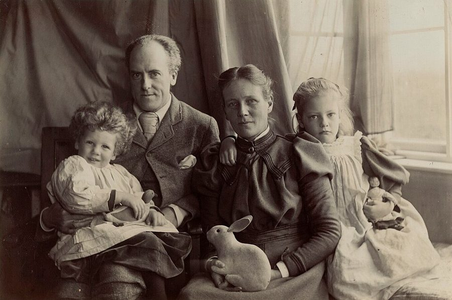
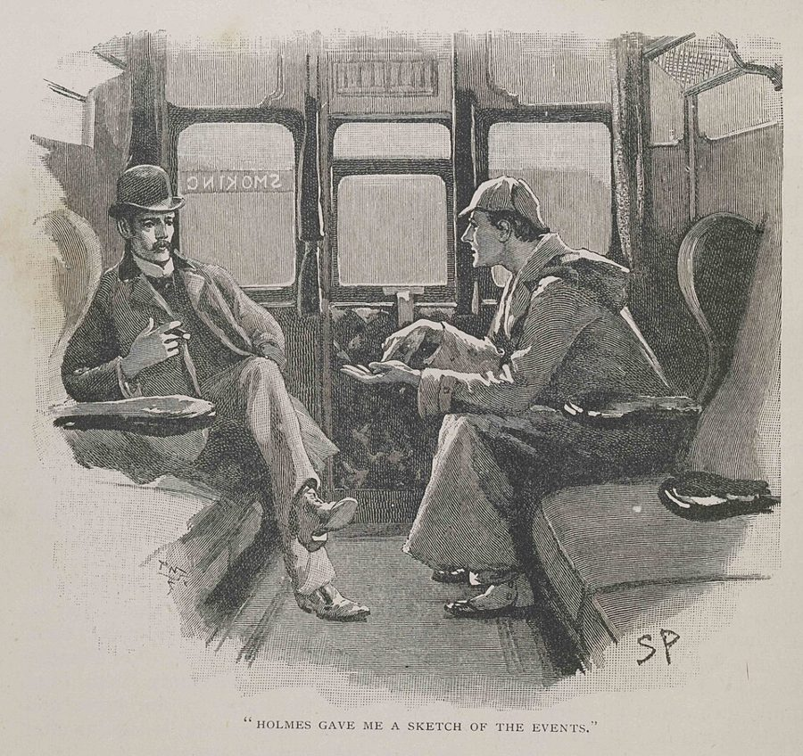

irreverence
… of rare brilliance and irreverence …
（才华罕见，又）不把权威当回事
irreverence 是对权威、规矩不恭敬。在作者嘴里这是夸人。
这一页是第 9 章的后半。前半用一万个抛硬币的基金经理演示纯运气能造出多少常胜将军，这里作者拿同一个道理去看别处：中两次头奖的女士、圣经密码、书封上的赞语、回测软件、券商的荐股名单、1900 年的各国股市、清晨电视上的抗癌见证、一个被检验的轮盘、一条没叫的狗。读的时候抓一条线：你看到的那一个，是从多少个里挑出来的？最后一节作者回答「什么时候真的不是运气」。

第 8 章讲了幸存者偏差。第 9 章前半（§1–§11）用蒙特卡洛造出一万个纯靠运气的经理，再把同一个偏差搬到生活里的巧合上，§10 讲生日问题时把它叫作数据挖掘。这一页是一长串变奏，每节换一个场景。§15 作者说医学的标准「下一章」再谈，其实要到第 11 章（页 11b）。§21 的做市商回扣第 9 章章首的牙医。
一个结果看上去很惊人，什么时候它只是从一大堆结果里挑出来的那一个？
读的时候带着这几个问题。不用先找答案，读完回来对照「检查一下理解」。
这一页没有一个贯穿的故事，是同一个道理的十次变奏，节奏很快。§12、§13 从彩票、圣经和书店起步，轻松好读。§14 回测是主菜：作者自己的软件，一篇论文的引文，一位同事。§15 只有一段，提了一下医学就停了。§16 回到华尔街，又突然跳到 1900 年的各国股市；§17 先做一个和连襟比运气的思想实验，再讲一次会议上碰到的老同事。§18、§19 最长：清晨电视上的抗癌广告、圣水、皮尔逊的轮盘、一块扎满飞镖的板，从轮盘到飞镖会觉得「突然跳了」。§20 很短，是科学界的版本。§21 换了口气，正面回答读者常问作者的一个问题。
这一页是原书和译本第 9 章的后半，§12–§21，一共 10 节。粗体是本站给的节名，后面是档和译本字数；下面是译本的小标题和这一节在译本电子书里开头的几个字（搜它就能跳过去），再下面是英文原文的开头。「先读」是这一章的骨架，「有空」好看、跳过不丢线，「可跳过」读不读都行。读完打个勾。
先把这一页用到、作者默认你懂的几个概念讲一遍。讲的是概念本身，作者拿它推出什么，读原书时自己看。别页讲过的概念，点链接过去看。
今天的「数据挖掘」多半是中性词：在大量数据里找规律，推荐系统、风控模型都靠它。作者用的是它在统计学里的贬义：不先说要找什么，在一大堆数据里找任何一种关系。
毛病出在试的次数。假设 100 个毫无关系的指标，两两配对共 4950 对；按常用的「5% 以下算显著」，单凭巧合平均就有约 250 对看起来「显著相关」。只把这 250 对拿出来讲，听的人会以为发现了规律。统计学把这叫多重比较问题。它和幸存者偏差是一回事的两面：试过的很多，你只看见冒出来的那几个。
在这一页：§12 的彩票、圣经密码、阴谋论，§14 的回测，§15 的医学，都是它的不同面孔。
回测是拿历史价格算一笔假想的账：如果过去照某条规则买卖，会赚多少。规则里的数（比如「比上周均价高 1.83% 就买」）可以一直调，直到过去的成绩好看。
调得越细，规则就越贴合过去那段数据里的偶然起伏，这叫过度拟合；在同一份数据上反复试、只留下最好看的那条，叫数据窥探。程序员熟悉的对应物：在测试集上反复调参，测试分数一路涨，上线就掉。防的办法是留一段从没碰过的数据（样本外）做最后一次检验，而且只检验一次。
在这一页：§14 作者的软件、那篇论文和那位同事讲的都是它；§16 挑股票、挑国家是同一件事。业绩记录见业绩记录。
人心里的「随机」常常是「均匀」：每格一个，正反交替。真正随机的结果反而总有扎堆和空白。抛 20 次硬币，出现连续 4 次同一面的机会约 77%；连续 5 次也有约 46%。
下图是本站用伪随机数扔的 16 支飞镖，落在 4×4 的 16 个格子里。平均每格一支，但每格正好一支的机会只有约百万分之一；平均会有五六格是空的，约八成的时候至少有一格扎了三支或更多。
在这一页：§19 先讲皮尔逊检验轮盘，再讲随机数表和飞镖；§18 的见证和 §12 的巧合也可以拿它来想。
做研究时常问：如果其实毫无效果，单凭巧合看到这么大差别的机会有多大？这个机会小于约定的门槛（最常用 5%），就叫统计显著。显著不等于重要，不显著也不等于「证明没有」。
麻烦在发表。显著的结果容易登上期刊，不显著的常被锁进抽屉。设想 20 个团队各自测一种其实无效的药：按 5% 的门槛，平均会有 1 个碰巧「显著」。它发表了，另外 19 个没人看见，读文献的人只看到「有效」。这就是发表偏差，科学版的幸存者偏差。
在这一页：§20 作者讲的就是它；§15 医学那一段是同一件事的预告，医生怎样读概率见条件概率和基础比率。
做市商同时挂出一个买价和一个卖价，比如 9.99 元收、10.01 元卖：谁想卖就买下，谁想买就卖给他，赚中间那一点差价（买卖价差）。单笔赚得极少，靠的是成交笔数多。生活里的对应物是机场的货币兑换柜台：两头报价，吃差价，不赌汇率往哪走。
它的风险在两处：手上暂时囤着的货可能突然大跌；来交易的人可能比你知道得多，专挑你报错价的时候来。所以做市商要不停地对冲、控制囤货的量。和它相对的是投机交易员：押涨跌，赚赔都大。
在这一页：§21 作者把做市商、赌场、场内交易员、集市上换钱的人归成一类，拿来回答「什么时候真的不是运气」。
按在书里出现的顺序排，标题前是节号。只讲到读懂这一页需要的程度。
Evelyn Adams 1985、1986 年两次中了新泽西州彩票的头奖；「十七万亿分之一」算的是事先指定她、指定那两期。Diaconis 和 Mosteller 1989 年发表〈研究巧合的方法〉，书里的「30 to 1」读作「大约三十分之一的机会」。《圣经密码》是前记者 Michael Drosnin 1997 年的畅销书，说圣经的字母跳着读能读出后世的事，包括 1995 年以色列总理拉宾遇刺；它依据 1994 年《统计科学》上的一篇论文，1999 年同一份期刊登出 McKay 等四位学者的反驳，他们的新实验都找不到这种密码。《达·芬奇密码》是 Dan Brown 2003 年的小说。
萨特（Jean-Paul Sartre，1905–1980）是法国存在主义哲学家、作家。1938 年前后他在一篇评 Dos Passos 小说《1919》的文章里说他是「当代最伟大的作家」，这句话后来常被印在 Dos Passos 的书上。作者给「哲学家」加了引号，对萨特不太客气。
那斯达克（NASDAQ）是美国以科技股为主的股票交易所。作者举的规则属于技术分析：只看价格走势（均线、突破）决定买卖，不看公司本身。TradeStation 是 1990 年代起流行的散户交易软件，自带一套写规则的语言，能一键回测。
楷体引文出自 Ryan Sullivan、Allan Timmermann、Halbert White 1999 年在《金融杂志》（Journal of Finance）发表的论文〈数据窥探、技术交易规则的表现和自助法〉。他们把一大批技术规则放在一起检验，并用 White 提出的「现实检验」（reality check）校正「一共试过多少条」。书里把 Timmermann 拼成了 Timmerman。
华尔街券商的股票分析师研究上市公司、发研究报告，给股票打评级，最高一档是「强烈买入」（strong buy）。上市公司每季公布一次利润，那几周叫财报季。「无风险收益率」指买美国国债就能拿到的利息，常被当成「什么都不做」的基准。401(k) 是美国雇员的退休储蓄账户，钱多半交给基金经理去买股票。§17 的「基金中的基金」（母基金）是挑一批基金经理、打包卖给投资人的生意，基金是什么见主动基金和指数基金。
1900 年的俄国股市在 1917 年革命后关闭，新政权没收企业、废除旧债，股票成了废纸。阿根廷在二十世纪初是世界上较富的国家之一，后来长期衰落。
Pauling 和苏格兰医生 Ewan Cameron 在 1970 年代报告大剂量维生素 C 能延长晚期癌症病人的生存期。梅奥诊所随后做了随机双盲试验，1985 年发表的那项给 100 位晚期结肠直肠癌病人每天口服 10 克，结论是没有疗效。卢尔德（Lourdes）是法国西南部的天主教朝圣地，传说那里的泉水能治病。自发缓解（spontaneous remission，译本：自發性復元）是极少数癌症不经治疗、原因不明地消退。

他的儿子 Egon Pearson（1895–1980）和 Jerzy Neyman 一起奠定了假设检验的框架，统计入门课都会讲。书里说皮尔逊检验的是 1902 年 7 月的几百万次轮盘。今天能查到的记录不一样：他 1894 年发表〈科学与蒙特卡洛〉，用的是一份周报 1892 年刊登的约一万六千次结果，结论是那里的轮盘「不是科学意义上的机会游戏」。后来有研究者指出，那份周报的记者其实没去看轮盘，数字是编的。

《银色马》（Silver Blaze）是柯南·道尔的福尔摩斯短篇：一匹名驹失踪、驯马师被杀。福尔摩斯注意到案发那夜看门狗没有叫，推断来的是狗认识的人。作者引的希伯来文出自《旧约·传道书》第一章：「日光之下并无新事」。
场内交易员是在交易所大厅里当面喊价的人，很多就是做市商。银行交易员「对着客户单做交易」，是接下客户的买卖单、自己当对手方，赚差价。黎凡特（Levant）指地中海东岸，黎巴嫩、叙利亚一带，作者是黎巴嫩人；那里的露天集市上有换外币的小贩，也是两头报价吃差价。
读英文原文时值得停一下的词和句：交易员的行话、作者的反话和双关、熟词生义。灰色斜体是原句里连续的几个词，在英文电子书里搜它就能找到；标「每个字都认识」的，是每个词都眼熟、合起来意思却变了的，最容易读错。点「记下」收进词本。
对着译本读这一章时，下面这些地方会把人读歪。方框里是译本的原句，在译本电子书里搜它就能找到；灰色斜体是英文原文那一处。只收意思错了、反了、漏了的，措辞上的出入和台湾用语不收。全书的勘误汇总在译本勘误。
… allowed me to extract an endorsement …
译本：「他才允許我收回那些讚辭」
原文括号里说：两人后来成了朋友，作者因此从 Wilmott 那里要到了一段给本书的推荐语。译本读来像是有人把从前的书封摘录撤掉了，和原意无关。
… This activity is called data snooping …
译本：「稱作資料探索」
snoop 是偷偷翻找。作者指的是在同一份历史数据上反复试，直到试出「有效」的规则，这是他在批评的做法。「探索」听着像正当的探索性分析，读不出贬义。
… in medical trials for mere random reasons …
译本：「有些管用的藥物純粹是隨機發現的」
原文说：有的药在临床试验里过关，只是因为运气，药本身未必管用；这正是数据挖掘的毛病。译本说成「管用的药是偶然发现的」，变成在讲意外的好发现。前一句的「意外治好」也偏了：原文说症状和疗法之间可能有纯属偶然的关联。
… always go up in any twenty-year period …
译本：「市場都只漲不跌」
那些「专家」说的是：随便挑一段二十年，期末都比期初高，中间可以大跌。译本的「只涨不跌」把它变成谁都不会信的话，作者批评的要点（拿美国这样的幸存者当规律）就看不出来了。
… in all likelihood he was sincere …
译本：「他的表情十分誠懇」
作者认为这位病人多半是真心的，确实相信是维生素救了他；§18 后面的道理就建立在这上面：真心的见证也可能只是自发缓解。「表情诚恳」只描写他的神情，读不出作者判断他是真心相信（下一段译本也译成脸上的神情），读者会少掉这个前提，甚至以为作者话里有话。
… a test of deviation from normality …
译本：「偏離正常值的檢定」
normality 在统计里指数据服不服从正态分布（钟形曲线）。作者的意思是：这个检验查的其实是结果偏离正态分布有多远，他说就目的而言，这和查「不随机」是一回事。读成「偏离正常值」，就看不出检验在比什么。
… a finding of absence and an absence …
译本：「沒有去發現」
作者对照的是两件事：研究找到了「某事不存在」，和文献里看不到任何发现。后者常常是做过、没结果、没发表。译本写成「没有去发现」，像是没人研究过，发表偏差的意思就丢了。
… All traders are not speculative traders …
译本：「所有的交易人都不是投機交易人」
这里的 All … are not 是部分否定：不是每个交易员都是投机者，有一类叫做市商。照译本读，变成了交易员全都不投机，和全书讲的投机交易员正面冲突，紧接着的「有一群人」也接不上。
读完这一章再看。下面是作者在这一章里的主张，由本站按主张之间的逻辑重新组织，不按原书的顺序；每条后面是节号，拿不准就回书里那一节再读一遍。
他说漫无目的地在数据里找关系，单凭运气就会冒出几条，看上去和事先预言的一样准。他拿中两次头奖、《圣经密码》、阴谋论和自己的回测软件说明，又引一篇论文说，今天流行的交易规则本身也可能是幸存者。
§12 §14书封只印最好的赞语，荐股名单只列连涨几季的公司，回头看只记得涨得好的国家股市。他说这是把最大值的分布当成变量本身的分布，拿自己十六岁凭萨特一句话买书当例子。
§13 §16一个人和他的连襟运气各半，四种组合里两种看起来差得很远。他凭信封背面的粗算说，一位挑基金经理的老同事讲的东西至少 97% 是噪声，而拿业绩作比较让情况更糟。
§17他说一串真正随机的结果必然带着图案，完全没图案的反倒像人造的，地图上的癌症群聚可能只是飞镖那样的随机扎堆。皮尔逊查出轮盘不完全随机，他说这本身说明不了什么。抗癌见证可以既真心、又只是自发缓解。
§18 §19没有显著结果的研究不发表，「发现了没有」和「没有发现」被混在一起。金融里他说「或许」只有做市商这类靠成交量吃饭的人受运气影响小；其余谁走运谁不走运，他说自己答不上来，只主张信息不够时保留判断。
§20 §21合起来：看到一个惊人的结果，先问它是从多少个里挑出来的、没被挑中的去了哪里。作者在这里收得很软：他不说成功全是运气，只说光凭结果分不出来。
这一章合起来：前半（§1–§11）用蒙特卡洛造出一群明知毫无本事的经理，算给你看纯运气能造出多少连赢五年的人，而且这个数更多取决于起跑的人数，不是各人的胜算；再把同一个机制搬到荐股信、生日和巧遇上。后半把它推到书评、回测、选股、医学和科学发表。两半说的是一件事：一份好纪录、一个惊人的发现，单独拿出来说明不了本事，也说明不了真相，要知道它背后有多少没被看见的失败者。作者的落点是保留判断，不是否定一切成功。
Yet real randomness does not look random!— §19。本站译：可是，真正的随机看起来并不随机！
一句像绕口令的感叹，关键是两个 random 不是一回事：前一个说的是产生结果的过程，后一个是人眼里「乱得很均匀」的样子。译本：「可是真正的隨機性，看起來並不隨機」意思到了。容易被误读成「世界其实不随机」；作者说的是随机的结果会扎堆、会连串，看着像有原因。
I never said that every rich man is an idiot and every unsuccessful person unlucky— §21。本站译：我从来没讲过富人个个是白痴、失败的人个个运气差。
自辩的口气：他料到读者会把全书读成「成功全靠运气」。关键词是 every，他否认的是一刀切。紧跟着的才是他的主张：信息不多的时候，先保留判断。也别反过来读成作者认为成功和运气无关，他只说分不出来。
这本书 2004 年出第二版，书里讲的多是 1980–2003 年的事。下面挑出这一页里能被后来的研究或事情检验的说法，分「书里 / 当时 / 今天」几栏，并给一个结论。结论判的是标题里「书里的说法：」后面那一句。全书的这一节汇总在今天怎么看。
读完作者的主张，再看它站不站得住。每一块摆出三样：主流怎么看，作者怎么看，本站的评论。最后一句是本站对这一页的总体判断。
主流看法：统计学里，两个互不相关的随机量相减，差的波动比单个大：两人的运气起伏一样大时，差距的起伏是单人的约 1.4 倍（√2 倍）。但两个结果如果被同一个因素推着走（比如同在一个股市里），相减会抵掉共同的部分，差反而稳定。业界评基金经理常拿他和同类指数的差来看，就是这个道理。
作者的看法：两边都随机，比较时愚弄加倍；那位挑经理的老同事讲的至少 97% 是噪声。§17
本站的评论：对互不相干的两个人（他和连襟），作者的思想实验是对的，算得出来。拿基金和大盘比就要分情况：大盘的起落两边都有，减掉以后剩下的才是经理自己的运气加本事，未必更糊涂。「至少 97%」正文没给算法。书后注释交代了比的是什么：台上比的是各经理的夏普比率（回报除以波动），讨论的差距只有 0.15 左右，而两个互不相关的经理只看一年，这个差距单凭运气就常常大得多。97% 这个数注释也没算出来，当粗估看。
主流看法：今天数据挖掘和机器学习是正当的行当。作者说的毛病，统计学有现成的名字和对策：多重比较（试得越多，显著的门槛就要定得越严）、留出样本外数据、实验之前先登记要检验什么。
作者的看法：不先定假设、把电脑扔进数据里找，试得越多，越可能凭运气找到只在过去有效的规则；一个随机序列总能找出某种图案。§14 §19
本站的评论：他讲的陷阱一点没过时，今天在机器学习里叫「在测试集上调参」，在学术圈叫 p 值操纵（p-hacking）。但他把「数据挖掘」整个当贬义词用，读者别跟着把探索数据本身当坏事：错的是只报幸存的结果、不拿没碰过的数据再验一次。
主流看法：做市商靠买卖价差吃饭，单笔风险小、笔数多，收入确实比投机稳。风险主要在两处：手上暂时囤着的货可能大跌，来交易的人可能比你知道得多。
作者的看法：做市商像庄家和店主，靠成交赚钱，运气被成交量摊薄；但他说的是「或许」，生涯「也许十年」。§21
本站的评论：后来的事给了他一个漂亮的例子：高频做市商 Virtu 2014 年申请上市的文件说，它 2009–2013 年的 1,238 个交易日里只亏过一天。反例也有：2012 年 8 月 1 日，做市商 Knight Capital 因为一段部署错了的程序，开盘 45 分钟里亏掉 4.6 亿美元以上。牙医不靠运气，前提是器械不出错。
本站的总体看法：这一页的道理今天看最站得住：多重比较、发表偏差、回测过拟合，后来都成了统计学和金融学的常识，作者讲得早，例子也好记。要打折扣的是他的数字（「至少 97%」）和一刀切的用词（「数据挖掘」全当贬义）。他自己的结论很克制：分不出来，就先别判。
先在心里答，再点开。答错的那题，回书里把对应那一节再读一遍。
十七万亿分之一是事先指定她这个人、指定那两期的概率。不指定是谁、哪两期，买彩票的人和开奖的期数都那么多，总会有人碰上。这和 §10 的生日问题是同一个道理。
说明至少有一个名人这样夸过。不说明一般人怎么评价：出版商只印最好的一句，你看到的是评价里的最大值，不是评价的整体。萨特那句话就被当成了公论。
先问一共试了多少条，挑出来以后有没有在从没用过的数据上再验一遍。试得越多，凭运气冒出一条好看规则就越容易，它只是规则里的幸存者。
10000 × ½ × ½ × ½ = 1250 家。即使它们平均只赚到国债那点收益，靠波动也会冒出一千多家「明星」，券商的推荐名单可能就是这样来的。
大约百万分之一，几乎不会发生；平均有五六格是空的。约八成的时候至少有一格扎三支以上，所以这本身不说明那一格有什么特别的原因。
极少数癌症病人会原因不明地自愈（自发缓解），他吃什么都会被当成功臣。真心只说明他相信，不说明药管用；没吃药却同样痊愈的人不会上电视。
像赌场、做市商这样靠大量交易、赚差价的行当，单笔的运气被成交量摊薄了。其余的人他说自己答不上来，主张信息不够时保留判断，也声明自己并不是说有钱人都是傻瓜。
用一句话说这一页：
想一想：你工作里有没有一个「看起来很神」的结果（一次 A/B 测试大胜、一个监控指标的异常、一位同事连续几个季度的好绩效）？你知道它是从多少次尝试、多少个人里挑出来的吗？
读过又忘了，从这里想起来。挑的是这一页最值得记住的故事和说法，不按原书顺序；每条后面是节号，想细看就回书里那一节。全书各页的这一节都收在全书回顾。
一句话：你看到的往往是最好的那一个：书评、规则、公司、疗法，都先问它是从多少个里挑出来的。
新泽西的一位女士两次中头奖，概率是十七万亿分之一。可要是不指定是谁，「某处某人中两次」一点也不稀奇。
§12十六岁的作者看到书封上萨特说 Dos Passos 是当代最伟大的作家，就买了书。那是最好的一句评价，不是大家的评价。
§13回测软件可以一直调参数，直到过去的成绩好看。作者相信，西方总能找到一只证券，涨跌和蒙古乌兰巴托的气温完全同步。
§14Carl Sagan 发现去卢尔德朝圣的癌症病人，治愈率反倒比自发缓解的统计还低一点。作者反问：统计学家该推论去卢尔德有害吗？
§1816 支飞镖扔进 16 个格子，几乎一定有格子扎堆、有格子空着。把它盖在地图上，报纸就会说那一格有致癌的辐射。
§19被问「什么时候真的不是运气」，作者只指出做市商：像店主一样靠成交赚差价，发不了大财，但在概率上过得不错。
§21